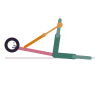

Ananta's Pose
Anantasana
How to
Lie on one side, prop the head on the lower hand, and reach the top hand to hold the big toe of the top leg, extending it toward the ceiling.
Benefits
- Stretches the hamstrings gently while lying down
- A calm, restorative side-lying stretch
- Improves hip mobility without strain
Practice
Hold for 5-8 breaths per side, keeping the movement gentle.

Get the Asanas appFree, no ads, works offline
Google Play
General information, not medical advice. If you have a health condition or pain, talk to a doctor or qualified teacher first.